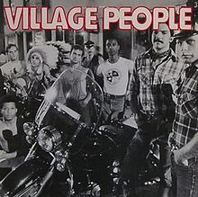
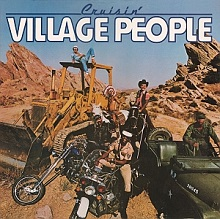
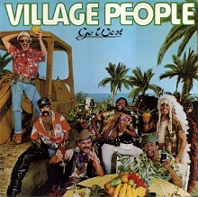
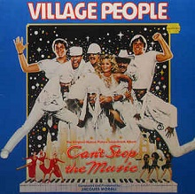
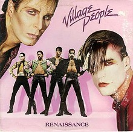
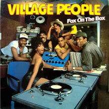

| Título |
Lanzamiento |
Info |
Lista de temas |
Village People |
1977 |
Village People es el álbum debut de la agrupación estadounidense Village People, publicado el 11 de julio de 1977. La canción "San Francisco (You've Got Me)" logró ingresar en el Top 50 del Reino Unido, ubicándose en la posición No. 45. |
- San Francisco (You've Got Me)
- In Hollywood (Everybody Is a Star)
- Fire Island
- Village People
|
 Macho Man |
1978 |
Macho Man es el segundo álbum de estudio de la agrupación estadounidense Village People, pubicado el 27 de febrero de 1978. El álbum logró repercusión comercial debido principalmente a los sencillos "Macho Man" y "Key West". 2 |
- Macho man
- I am what i am
- Key West
- Medley: Just A Gigolo/I Ain't Got Nobody
- Sodom and Gomorrah
|
Cruisin' |
1978 |
Cruisin' es el tercer álbum de estudio del grupo Village People, lanzado en 1978. El nombre tiene doble significado: puede significar manejando alrededor o gay cruising. Presenta los hits "Hot Cop" y "Y.M.C.A." que llegaron al #2 en el Billboard Hot 100. |
- YMCA
- Medley: The Women / I'm a Cruiser
- Hot cop
- My roommate
- Ups and Downs
|
Go West |
1979 |
Go West es el cuarto álbum de estudio de la agrupación Village People, publicado el 26 de marzo de 1979. Contiene los exitosos sencillos "In the Navy" (#3 en la lista Billboard Hot 100, #2 en el UK Top 40) y "Go West", de la cual el dúo Pet Shop Boys realizó una reconocida versión en 1993. El álbum fue publicado en CD en 1999.2 |
- In the navy
- Go west
- Citizens of the world
- I wanna shake your hand
- Get away holiday
- Manhattan Woman
|
 Live and Sleazy |
1979 |
Live and Sleazy es el primer álbum en vivo de la agrupación estadounidense Village People. El disco contiene una mezcla de grabaciones en vivo y en estudio y fue publicado en formato dual. |
Live
- Fire Island
- Hot Cop
- Medley: "San Francisco (You've got Me) / In Hollywood (Everybody is a Star)
- Macho man
- In the navy
- YMCA
Sleazy
- Sleazy
- Rock and Roll is back again
- Ready for the 80's
- Save me (Balada)
- Save me (Uptempo)
|
Can't Stop the Music |
1980 |
Can't Stop the Music es el sexto álbum de estudio de la agrupación estadounidense Village People, publicado en 1980. El álbum sirvió como banda sonora de la película del mismo nombre. Aunque el filme fue un fracaso comercial, el álbum logró la posición No. 9 en las listas de éxitos británicas,2 la No. 47 en la lista Billboard 200 de los Estados Unidos y la posición No. 1 en Australia. |
- Can't stop the music
- Samantha
- Give me a break
- Liberation
- Magic night
- The sound of the city
- Milkshake
- YMCA
- I love you to death
- Sophistication
|
Renaissance |
1981 |
Renaissance es el séptimo álbum de estudio de la agrupación estadounidense Village People, publicado en 1981. El título del álbum refleja el abandono del sonido disco que caracterizaba a la agrupación en sus inicios para dar paso a un sonido similar al new wave. Los trajes característicos de la agrupación también fueron dejados a un lado en esta nueva etapa. |
- Do you wanna spend the night
- 5 O'Clock in the morning
- Fireman
- Jungle City
- Action Man
- Big Mac
- Diet
- Food fight
|
Fox on the Box/In the Street |
1982 |
Fox on the Box es el octavo álbum de estudio de la agrupación estadounidense Village People, publicado en Europa y Japón por RCA Records en 1982 y en los Estados Unidos bajo el nombre In the Street por Casablanca Records un año después. |
- Fox on the box
- In the street
- Lonely Lady
- Everybody loves the funk
- Success
- Spaced out
- Play Bach
- Radio Freak
- America
|
 Sex Over the Phone |
1985 |
Sex Over the Phone es el noveno y último álbum de estudio de la agrupación estadounidense Village People. La canción homónima logró cierta radiodifusión en Europa, pero el disco no pudo alcanzar la popularidad de los lanzamientos anteriores de la agrupación. |
- Sex over the phone
- New York City
- Just give me what i want
- I won't take no for an answer
- Power of the night
- Sexual education
- Sensual
|